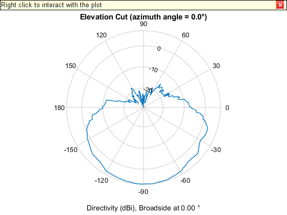
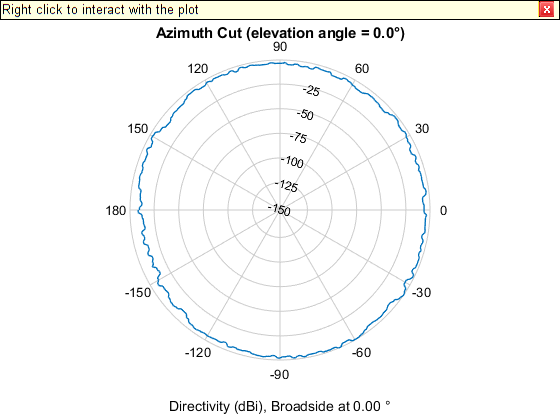

Simulating a 28 GHz antenna for a UAV
For complex antennas, it is often necessary to perform detailed EM simulations in third-party software such as HFSS and then import the results into MATLAB for analysis. In this lab, we will import HFSS simulation data for a 28 GHz antenna designed for a UAV (unmanned aerial vehicle or drone). Antenna modeling is particularly important for mmWave aerial links since the directivity gain is necessary to overcome the high isotropic path loss of mmWave frequencies. Also, UAVs can be an arbitrary orientation and it is important to model the cases when the UAV is out of the beamwidth of the antenna.
In going through this lab, you will learn to:
- Import data from an EM simulation data given as a MATLAB table object.
- Compute directivity from E-field values
- Create custom arrays in MATLAB's phased array toolbox
- Display 2D and 3D antenna patterns
- Compute the half-power beamwidth (HPBW) of an antenna
- Compute fractions of power in angular areas
- Estimate the path loss along a path
Submission: Complete all the sections marked TODO, and run the cells to make sure your scipt is working. When you are satisfied with the results, publish your code to generate an html file. Print the html file to PDF and submit the PDF.
Contents
Load the data
The data for this lab was generously donated by Vasilii Semkin of VTT and taken from the paper:
- W Xia,V. Semkin, M. Mezzavilla, G. Loianno, S. Rangan, Multi-array Designs for MmWave and Sub-THzCommunication to UAVs, 2020
The paper performs EM simulations on a ciccularly polarized 28 GHz antenna mounted to the bottom of a commercial DJI Matrice 100 quadrocopter. An image of the drone with the antenna and its pattern is shown in the following picture.
A = imread('./CP_patch_downwards_m100_3D_coord.png'); imshow(A, 'InitialMagnification', 40);
We will first load the data with the following command.
load patch_bottom_data.mat
Running the above command should create an object, data_table, in your workspace. The data_table object is a MATLAB table, which is like a SQL table. Run the following command to see the first five rows. You should see the fields in each table entry including the azimuth and elevation and the corresponding V and H fields.
data_table(1:5,:)
ans =
5×9 table
x_AngleIndex Elevation Azimuth Frequency TotVReal TotVImag TotHReal TotHImag Var9
____________ _________ _______ _________ ________ ________ ________ ________ __________
0 -90 0 2.8e+10 0.018862 0.037489 0.02257 0.019296 {0×0 char}
1 -90 2 2.8e+10 0.019638 0.03814 0.021898 0.017976 {0×0 char}
2 -90 4 2.8e+10 0.020391 0.038744 0.021199 0.016634 {0×0 char}
3 -90 6 2.8e+10 0.021118 0.039301 0.020475 0.015272 {0×0 char}
4 -90 8 2.8e+10 0.02182 0.03981 0.019725 0.013891 {0×0 char}
Reading and the data table
We can read the table columns into MATLAB arrays with commands such as,
col = data_table(:,{column_name}).Variables;% TODO: Read the 'Elevation' and 'Azimuth' columns into matlab arrays % el and az. el = data_table(:,{'Elevation'}).Variables; az = data_table(:,{'Azimuth'}).Variables;
In this simulation, the antenna was pointed upwards, meaning that the boresight is at an elevation of 90 degrees. But, since we want to simulate antenna pointing downwards, we need to switch the signs of the elevation angles.
% TODO: Switch the elevation angles with el = -el;
el = -el;
Getting the E-field
Most EM simulations prodcuce outputs as E-field at some distance from the antenna. The E-field is represented by two complex values, one for the H polarization and for the V polarization.
% TODO: Read the complex E-fields from the data_table object. Store them % in variables EH and EV. EV = data_table(:,{'TotVReal'}).Variables + ... 1i*data_table(:,{'TotVImag'}).Variables; EH = data_table(:,{'TotHReal'}).Variables + ... 1i*data_table(:,{'TotHImag'}).Variables;
Recall that the radiation intensity and any point is proportional to the E-field power,
W = Epow/eta, Epow = |EH|^2 + |EV|^2.
where eta is characteristic impedance. This is the power flux that can be received by an antenna exactly aligned in polarization with the E-field.
% TODO: Compute the E-field power, Epow = |EH|^2 + |EV|^2. % Remember to use the MATLAB abs() command. Epow = abs(EH).^2 + abs(EV).^2;
Compute the directivity
We next compute the directivity of the antenna. The directivity of the antenna is given by,
dir = U / Ptot
where Ptot is the total radiated power and U is the far-field radiation density
U = r^2 W = r^2 Epow / eta
Hence, the directivity (in linear scale) is:
dir = c*Epow
for some constant c. To compute the constant c, we know that the average of the directivity dir * cos(el) over a spherical integral must be one. Hence, if we take mean over the discrete values, you should have that:
mean(dir.*cos(el)) / mean(cos(el)) = 1
You can use this relation to find the scale factor, c.
TODO: Compute a vector, dir, with the directivity of each point in dBi. Remember, MATLAB's cos() function takes the argument in radians.
el_rad = deg2rad(el); c = mean(cos(el_rad))/mean(Epow.*cos(el_rad)); dir =c*Epow; ratio = mean(dir.*cos(el_rad)) / mean(cos(el_rad)); disp(ratio); dir_dB = pow2db(dir); % directivity in dBi % TODO: Print the maximum gain. maxD_dBi = max(dir_dB); maxD_lin = db2pow(maxD_dBi); fprintf(1, 'maximum gain = %f\n', maxD_lin); fprintf(1, 'maximum gain [dBi] = %f\n', maxD_dBi);
1.0000 maximum gain = 5.646113 maximum gain [dBi] = 7.517496
Plotting the 3D antenna pattern
To plot the antenna pattern, we will create a CustomAntennaObject in MATLAB's phased array toolbox. However, to use the CustomAntennaObject, we need to re-format the directivity vector into a matrix. The process is tedious, but conceptually simple. What we need to do is create a matrix, dirMat, with values, dirMat(i,j) is the directivity at (elevation, azimuth) angles (elval(i), azval(j)).
elvals = (-90:2:90)'; azvals = (-180:2:180)'; nel = length(elvals); naz = length(azvals); disp(naz*nel); fprintf(1, 'number of elevation angles = %f\n', nel); fprintf(1, 'number of azimuth angles = %f\n', naz);
16471 number of elevation angles = 91.000000 number of azimuth angles = 181.000000
If you have done everything correctly up to now, you will have a vector, dir, that is should be naz*nel x 1. To convert this to the dirMat matrix, you can do the following:
- Reshape the vector, dir, into a directory dirMat of size naz x nel Take the transpose of the matrix so it is nel x naz.
- Circularly shift (using the MATLAB command circshift) so that the first column of dirMat is moved to the position corresponding to az=0. We do this since the angles in dirMat go from 0 to 360, not -180 to 180
- Flip the dirMat vertically with the MATLAB command flipud. We do this since we want to look at an antenna pattern facing downwards
TODO: Create dirMat as above
dirMat = reshape(dir_dB,[naz,nel])'; % first = dirMat(:,1); I = find(azvals == 0); dirMat = circshift(dirMat,I,2); dirMat = flipud(dirMat); % TODO: Now, create the antenna object with the correct parameters % Use an all zero phasePattern. phasePattern = zeros(size(dirMat)); ant = phased.CustomAntennaElement(... 'AzimuthAngles' , azvals, ... 'ElevationAngles' , elvals, ... 'MagnitudePattern', dirMat, ... 'PhasePattern' , phasePattern); % TODO: Plot the antenna pattern with the ant.pattern() command fc = 28e9; ant.pattern(fc);
Plot a polar 2D plot
We next plot a 2D antenna pattern
TODO: Use the ant.patternElevation(...) to plot the antenna cut at azPlot = 0 degrees
azPlot = 0; figure; patternElevation(ant, fc, azPlot); figure; patternAzimuth(ant,fc,0); 
Computing the half-power beamwidth
The half-power beamwidth is a common value in describing the directivity of an antenna. We show how this quantity can be computed. First, get the numerical values of the directivity along a cut at azPlot = 0. We do this with the same command as above, but with an output argument:
% TODO: Run the clf('reset') command. This is needed since the last plot % was a pattern plot, clf('reset'); % TODO: % This returns the directivity along elevation angles elcut elcut = (-180:180)'; dircut = patternElevation(ant, fc, azPlot);
The HPBW is the range of angles that correspond to the directivity 3 dB below the peak. TODO: Use the dircut and elcut vectors to find and print the HPBW.
dir_range = max(dircut)-3;
hpbw_angles = elcut(dircut >= dir_range);
max_an = max(hpbw_angles);
min_an = min(hpbw_angles);
HPBW = abs(max_an-min_an);
fprintf(1, 'The HPBW is %f\n', HPBW);
The HPBW is 86.000000
Computing power fractions.
Often we are interested in finding the fraction of radiated power in some angular region. The fraction of power radiated in any region is proportional to the sum of values Epow(i)*cos(el(i)) for all points i in the region.
[new_dir,new_az,new_el] = ant.pattern(fc, 'Type', 'Directivity'); tot_power = sum(Epow.*cos(el_rad)); I = find(el_rad>=0); el_up = el_rad(I); Epow_up = Epow(I); up_power = sum(Epow_up.*cos(el_up)); ratio_up = up_power/ tot_power; fprintf(1, 'The fraction of power in the upper region is %f\n', ratio_up); I = find(el_rad<0); el_down = el_rad(I); Epow_down = Epow(I); down_power = sum(Epow_down.*cos(el_down)); ratio_down = down_power/ tot_power; fprintf(1, 'The fraction of power in the lower region is %f\n', ratio_down); % TODO: Use this relation to print the fraction of power radiated in % the upper hemisphere. This should be small, since most of the % power is radiated downwards. % TODO: Print the power fraction within the HPBW: I_hpbw = (el >= -90 & el <= -40); el_hpbw = el_rad(I_hpbw); Epow_hpbw = Epow(I_hpbw); hpbw_power = sum(Epow_hpbw.*cos(el_hpbw)); ratio_hpbw = hpbw_power / tot_power; fprintf(1, 'The fraction of power within the HPBW region is %f\n',... ratio_hpbw);
The fraction of power in the upper region is 0.032992 The fraction of power in the lower region is 0.967008 The fraction of power within the HPBW region is 0.563596
Computing the path loss along a path
% Following the code in the demo, plot the path loss (omni and % with element gain) of a UAV RX flying from (0,0,30) to (500,0,30) % in a linear path. Assume the TX is at (0,0,0). % % TODO: Plot the omni and directional path loss vs. x position. % % You should see initially that you obtain significant antenna gain % since the antenna is facing downwards to the TX. But, as you fly % the antenna gain decreases and becomes negative. Before plotting you % will want to run the command, clf('reset'). This is necessary since the % pattern plots above screw up later figures. clf('reset'); lambda = physconst('Lightspeed')/fc; x = linspace(0,500,100); y = zeros(1,100); z = linspace(30,30,100); % plotting the UAV path plot3(x,y,z); hold on; plot3(0,0,0, 'x', 'MarkerSize',10); hold on; plot3(0,0,30, 'o', 'MarkerSize',10); hold on; plot3(500,0,30, 'd', 'MarkerSize',10); xlabel('x');ylabel('y');zlabel('z'); grid(); title('UAV Flying Path'); legend('UAV path','TX position','UAV start','UAV end',... 'Location','southoutside','Orientation','horizontal'); % the azimuth az0 is 0 since the UAV is moving along the x axis. [az0, el0, rad0] = cart2sph(-x, -y, -z); az0 = rad2deg(az0)'; el0 = rad2deg(el0)'; %[new_dir,new_az,new_el] = ant.pattern(fc, 'Type', 'Directivity'); F = griddedInterpolant({elvals,azvals},dirMat); dirGain = F(el0, az0)'; plOmni = fspl(rad0, lambda); plDir = plOmni - dirGain; figure; plot(x,plOmni,'LineWidth',2); hold on; plot(x,plDir,'LineWidth',2); title('Omni vs Directional Path loss'); legend('Omni','Directional'); xlabel('Distance on x axis [m]'); ylabel('Path Loss [dB]'); grid();